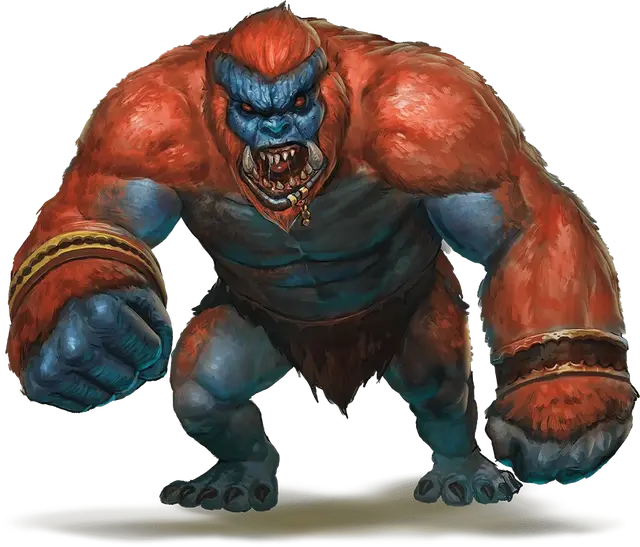

Барлгура
Barlgura
Большое Исчадие (Демон), хаотично-злое

Класс Доспеха 15 (природный доспех)
Хиты 68 (8к10 + 24)
Скорость 40 футов, лазая 40 футов
| мод | спас | ||
|---|---|---|---|
| СИЛ | 18 | +4 | +4 |
| ЛОВ | 15 | +2 | +5 |
| ТЕЛ | 16 | +3 | +6 |
| мод | спас | ||
|---|---|---|---|
| ИНТ | 7 | −2 | −2 |
| МДР | 14 | +2 | +2 |
| ХАР | 9 | −1 | −1 |
Навыки Восприятие +5, Скрытность +5
Сопротивление урону огонь, холод, электричество
Иммунитет к урону яд
Иммунитет к состояниям отравление
Чувства слепое зрение 30 футов, тёмное зрение 120 футов, пассивное Восприятие 15
Языки Бездны, Телепатия 120 фт.
Опасность 5 (1800 опыта)
Бонус мастерства +3
Особенности
Врождённое колдовство. Базовой характеристикой барлгуры является Мудрость (Сл спасброска от заклинания 13). Барлгура может накладывать следующие заклинания, не нуждаясь в материальных компонентах:
• 1/день каждое: воображаемая сила [phantasmal force], опутывание [entangle]
• 2/день каждое: маскировка [disguise self], невидимость [invisibility] (только на себя)
Безрассудство. В начале своего хода барлгура может решить, что в этом ходу все рукопашные атаки оружием будет совершать с преимуществом, но в этом случае до начала его следующего хода все броски атаки по нему тоже будут совершаться с преимуществом.
Прыжок с разбега. Если барлгура совершает прыжок с разбега, он прыгает в длину на расстояние до 40 футов и в высоту на расстояние до 20 футов.
Вариант: призыв демона. У некоторых демонов может быть действие, позволяющее им призывать других демонов.
Призыв демона (1/день). Демон выбирает, кого призвать, и пытается это сделать. Барлгура получает 30% шанс призыва одного барлгуры [barlgura].
Призванный демон появляется в свободном пространстве в пределах 60 футов от призывателя, и действует как его союзник, не имеющий способности призывать демонов. Он призывается на 1 минуту или пока призыватель не умрёт или действием его не отпустит.
Действия
Мультиатака. Барлгура совершает три атаки: одну укусом, и две кулаками.
Укус. Рукопашная атака оружием: +7 к попаданию, досягаемость 5 футов, одна цель. Попадание: 11 (2к6 + 4) колющего урона.
Кулак. Рукопашная атака оружием: +7 к попаданию, досягаемость 5 футов, одна цель. Попадание: 9 (1к10 + 4) дробящего урона.
Описание
Барлгура представляет дикость и жестокость Бездны. Барлгуры сбиваются в стаи, чтобы одолеть противника, который сильнее их, захватить ужасные трофеи и развесить их на своей территории.
Барлгура выглядит как огромный орангутанг с ужасной, набрякшей мордой и клыками, торчащими из пасти. Ростом барлгура чуть менее 8 футов, у него широкие плечи и весит он 650 фунтов. Передвигается по земле как обезьяна, ловко и быстро лазает.
См. дополнительно статью: "Бестиарий: Демоны"